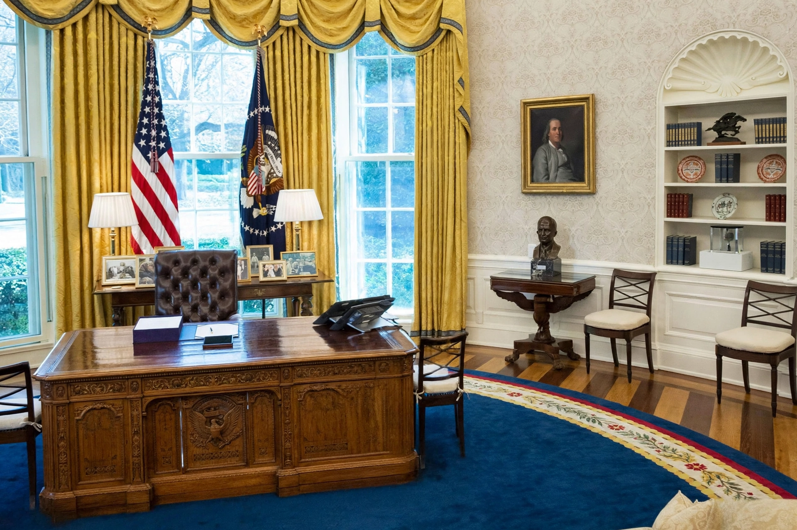

| Presidency of Barack Obama | |
|---|---|
| Term | January 20, 2009 – January 20, 2017 |
| President | Barack Obama |
| Vice President | Joe Biden |
| Party | Democratic |
| Election | 2008, 2012 |
| Preceded by | George W. Bush |
| Succeeded by | Donald Trump |
The presidency of Barack Obama began on January 20, 2009, when Barack Obama was inaugurated as the 44th president of the United States, and ended on January 20, 2017. Obama, a Democrat from Illinois, took office following his victory over Republican nominee John McCain in the 2008 presidential election. Four years later, he won re-election in the 2012 presidential election, defeating Republican nominee Mitt Romney. His vice president was Joe Biden, and he was succeeded by Republican Donald Trump.

Obama inherited an economy in the Great Recession. His first major act, the American Recovery and Reinvestment Act of 2009, was a $787 billion economic stimulus package. In March 2010 he signed the Patient Protection and Affordable Care Act ("Obamacare"), the most significant expansion of the health-care system since the 1960s. Other major legislation included the Dodd–Frank financial reform, the repeal of "Don't Ask, Don't Tell", the Budget Control Act of 2011, and the American Taxpayer Relief Act of 2012. After Republicans gained control of Congress, Obama increasingly relied on executive actions, including the DACA immigration programme of 2012.
Obama oversaw the drawdown of US forces in Iraq, an initial surge and later withdrawal in Afghanistan, and the 2011 military operation in Pakistan that killed Osama bin Laden. His administration negotiated the Iran nuclear deal (JCPOA, 2015), normalised relations with Cuba in 2014, and joined the Paris Agreement on climate change in 2015. He ordered military intervention in Libya in 2011 and against ISIS in Iraq and Syria from 2014.
During his presidency, unemployment fell from 10 percent to below 5 percent, the stock market rose substantially, and the Supreme Court legalised same-sex marriage nationwide in Obergefell v. Hodges (2015), a development Obama supported. Historians and political scientists generally rank him in the upper tier of American presidents, while his healthcare law and executive actions remained politically contested.